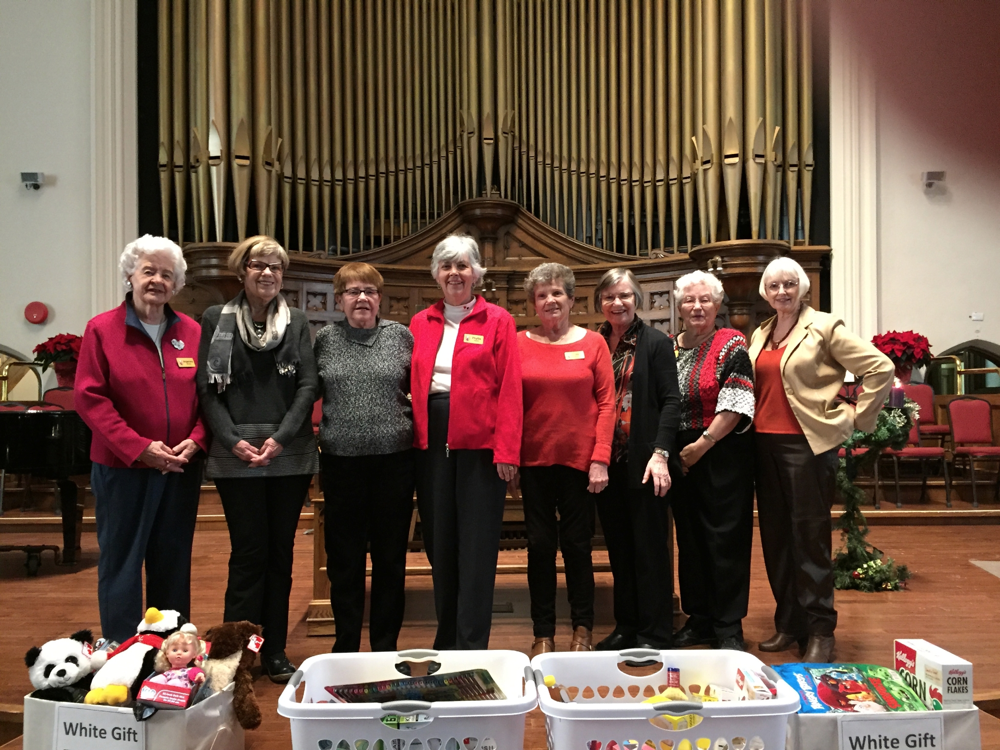

-1-MasterItem.svg)
Stories of Westminster United Church & its People / Page
191

Shown in this 2017 picture are the women of our congregation who represent the
last
of the organization of UCW Circles (once numbered 1-19) From left to right : Angenora Murphy,
Rita Menzies (both from Unit 13), Ann Peeler, Phyllis Reader, Val McIntyre, Liz Wijtkamp,
Lynn Heise, Marnie Bolland (all from Unit 10).